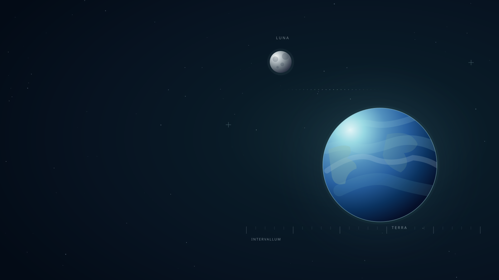

NAJTRUDNIEJ NARYSOWAĆ TO, CZEGO PRAWIE NIE WIDAĆ
Najwięcej jest pomiędzy.
Na obrazkach planety ustawiają się jedna przy drugiej. W rzeczywistości dzielą je odległości tak wielkie, że uczciwy rysunek zostawiłby nam przede wszystkim pustą kartkę.
PATRZYSZ NA ZNANY OBRAZ
Osiem planet. Jedna ładna rodzinna fotografia.
Merkury, Wenus, Ziemia, Mars, Jowisz, Saturn, Uran i Neptun. W podręcznikach widzimy je często ustawione obok siebie: wszystkie rozpoznawalne, wszystkie mieszczą się na jednej stronie.
Ale takie zestawienie zwykle pokazuje rozmiary planet według jednej skali, a odległości między nimi według innej. Gdyby zachować tę samą skalę dla średnic i dla odległości, większość planet stałaby się drobinami zagubionymi w pustce. Nawet NASA wprost zwraca uwagę na ten problem przy budowaniu modeli Układu Słonecznego. [1]
To nie musi być błąd autora ilustracji. Czasem trzeba celowo zmienić proporcje, żeby pokazać budowę planet lub układ orbit. Błędem byłoby jednak nie powiedzieć czytelnikowi, co zostało przeskalowane.
W astronomii piękny obraz może być prawdziwy w szczegółach, a jednocześnie nieprawdziwy w proporcjach.
Sprawdzimy to na dwóch światach, które znamy najlepiej.
Średnica Ziemi wynosi około 12 742 km. Księżyc jest mniej więcej 3,7 raza mniejszy, a średnia odległość między środkami obu ciał wynosi około 384 400 km. [2]
Poniżej zapraszam na osobliwy spacer. Ziemia i Księżyc mają rozmiary zachowane w tej samej proporcji co odległość między ich środkami. Celowo trzeba przewinąć długi fragment ekranu, zanim dotrzemy do Księżyca. Odległości na ekranie są wyrażone w pikselach, nie rzeczywistych centymetrach — liczy się proporcja.
To właśnie odległość.
Przewijaj dalej ↓W całym tym odstępie nie umieszczaliśmy niczego.
A to dopiero przestrzeń między naszą planetą i jej naturalnym satelitą. Odległości planet od Słońca są o wiele większe. To właśnie dlatego fotografia z bliska, przekrój naukowy i model rzeczywistej skali mogą wyglądać tak niepodobnie.
Ziemia jest ziarnkiem. Gdzie postawisz Słońce?
Nie musimy wymyślać takiego doświadczenia: NASA/JPL proponuje budowanie własnych modeli odległości w tej samej skali co rozmiary ciał. Nasza wersja przyjmuje kulkę Ziemi o średnicy dokładnie 1 cm. [1]
To średnie odległości orbitalne, nie odległości między aktualnymi położeniami planet. Planety poruszają się po orbitach, więc prawdziwy dystans Ziemia–Jowisz i Ziemia–Neptun zmienia się w czasie. Dane bazują na średniej średnicy Ziemi i odległościach heliocentrycznych NASA. [3, 4]
Tak wygląda przestrzeń, kiedy aparat nie próbuje jej upiększać.
25 września 2017 roku kamera nawigacyjna sondy OSIRIS-REx uchwyciła Ziemię i Księżyc w jednym czarno-białym kadrze. W chwili wykonania zdjęcia ciała te były od siebie oddalone o około 401 200 km — nie o średnią wartość 384 400 km. [5]
 NASA / OSIRIS-REX / 25.09.2017
NASA / OSIRIS-REX / 25.09.2017
Zdjęcie przedstawia rzeczywistą obserwację. Pozorna separacja na fotografii zależy od kierunku patrzenia sondy i perspektywy, dlatego nie służy do samodzielnego pomiaru rzeczywistego odstępu. NASA podaje odległość z danych misji.
Fotografia: NASA/Goddard/University of Arizona, kamera NavCam 1. Oryginał zdjęcia i opis NASA. Jeśli zdjęcie nie załaduje się na urządzeniu, można otworzyć je z podanego źródła.Teraz Ty wybierasz, jak duży będzie cały świat.
Zmiana jednego parametru nie powinna zmieniać samych proporcji. Wybierz średnicę Ziemi w modelu i zobacz, jak rosną pozostałe wielkości. To prosta kalkulacja, bez animacji, canvasu i obciążania GPU.
Wszystkie odległości są przeliczane w jednej wspólnej skali.
Wielkości odpowiadają średniej średnicy Ziemi 12 742 km, średnicy Księżyca 3 474,8 km, średnicy Słońca około 1 392 700 km oraz wybranym średnim odległościom orbit. Wyniki zaokrąglono. [2–4]
Dlaczego potrzebujemy aż trzech rodzajów obrazów?
Fotografia, schemat i planetarium nie robią tego samego. Każde narzędzie pomaga odpowiedzieć na inne pytanie.
Zapisuje światło z określonego kierunku i chwili. Perspektywa, ekspozycja i optyka decydują, jak obiekty wyglądają na zdjęciu.
Powiększa lub pomniejsza elementy tak, by ukazać budowę, kolejność lub różnice rozmiarów. Powinien jasno mówić, co nie jest w skali.
Pozwala przesuwać kamerę i oglądać układ z różnych stron. Nie zwalnia jednak z decyzji o skali, perspektywie i polu widzenia.
Model 3D nie jest automatycznie bardziej prawdziwy niż rysunek. Jest innym sposobem zadawania pytań.
Cztery sposoby, żeby zobaczyć pustkę.
Wszystkie doświadczenia przeprowadzisz w istniejącym planetarium. Silnika 3D nie uruchamiamy, dopóki go wyraźnie nie wybierzesz.
Znajdź wszystkich, a potem się oddal.
Wybierz „Cały Układ” i stopniowo oddalaj kamerę. Dlaczego planety znikają szybciej, niż oczekiwałbyś z podręcznikowego obrazka?
Zmień punkt widzenia.
Przenieś kamerę do Ziemi, a potem spróbuj znaleźć Księżyc. Porównaj z naszym długim schematem odległości.
Sprawdź ustawienia rozmiaru.
Jeśli panel oferuje przełącznik skali 1:1, włącz go. Zobacz, co dzieje się z czytelnością planet przy zachowaniu proporcji.
Przesuń kamerę w bok.
Zbliż się i oddal, obróć scenę, porównaj pozorną wielkość tych samych planet. Pomyśl, dlaczego położenie kamery zmienia odczyt obrazu.
Uczciwie o naszym silniku: planetarium korzysta z przybliżonych pozycji orbitalnych NASA/JPL w zakresie 1800–2050 i grafiki czasu rzeczywistego. Średnice, promienie orbit, oświetlenie oraz pole widzenia mogą być przedstawione w różnych skalach i trybach. Nie traktuj widoku jako wiernego zdjęcia z konkretnego miejsca ani jako efemeryd do nawigacji. Wersja artykułowa nie uruchamia silnika podczas przewijania.